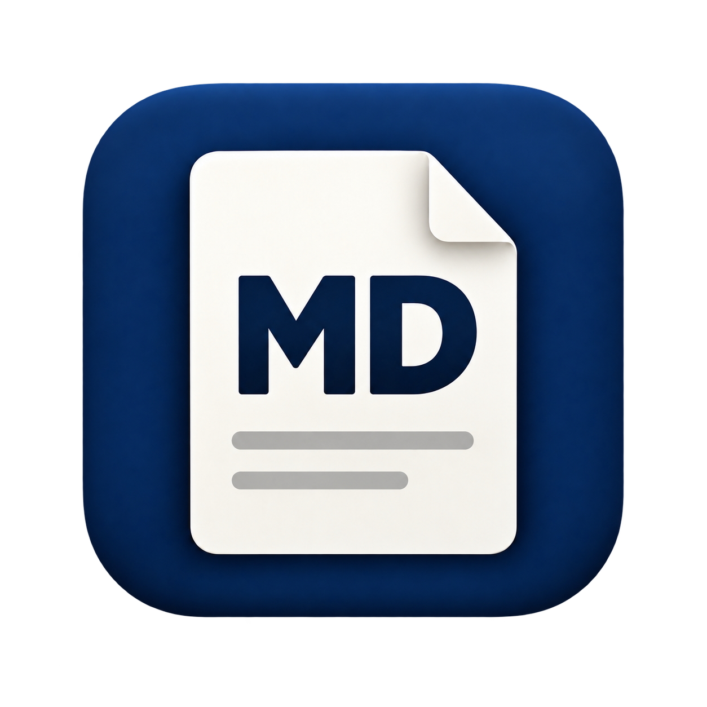

DAILY NOTES / 01
작은 기록이
좋은 생각으로
하루의 아이디어를 읽기 좋은 문서로.
오늘의 할 일
- ✓ 아이디어 모으기
- ✓ 문서 정리하기
- □ 동료에게 공유하기
| 기능 | 상태 |
|---|---|
| 수식 · 다이어그램 | 지원 |
| 오프라인 보기 | 지원 |
기록은 가볍게, 생각은 선명하게.

엠디봄MDBomFREE & OPEN SOURCE · v1.0
AI가 정리한 메모부터 프로젝트 문서까지.
기호로 가득한 .md 파일을
읽기 좋은 문서로 만나보세요.
Windows · macOS / 무료 · 읽기 전용
# 작은 기록이
# 좋은 생각으로
하루의 아이디어를 **읽기 좋은 문서**로.
## 오늘의 할 일
- [x] 아이디어 모으기
- [x] 문서 정리하기
- [ ] 동료에게 공유하기
| 기능 | 상태 |
| --- | --- |
| 수식 · 다이어그램 | 지원 |
| 오프라인 보기 | 지원 |
> 기록은 가볍게, 생각은 선명하게.DAILY NOTES / 01
하루의 아이디어를 읽기 좋은 문서로.
| 기능 | 상태 |
|---|---|
| 수식 · 다이어그램 | 지원 |
| 오프라인 보기 | 지원 |
기록은 가볍게, 생각은 선명하게.
위 버튼을 눌러 문서와 소스를 비교해 보세요.
앱의 보기 방식을 설명하기 위한 웹 예시입니다.
MADE FOR READING
단순한 메모도, 수식이 담긴 자료도.
문서의 내용에 집중할 수 있도록.
문서와 Markdown 소스를 좌우 또는 상하로 나란히 보세요. 스크롤 연결로 같은 위치를 따라가고, 화면별 폭과 글꼴을 편하게 조절할 수 있습니다.
제목·표·체크리스트·코드 강조는 기본. LaTeX 수식, Mermaid 다이어그램과 로컬 SVG 이미지도 인터넷 연결 없이 표시합니다.
인쇄하거나 PDF로 저장하고, 이미지·수식·다이어그램을 담은 하나의 HTML 파일로 내보내세요. 받는 사람은 엠디봄 없이도 브라우저에서 열 수 있습니다.
YOUR FILES STAY YOURS
엠디봄은 읽기 전용 앱입니다. 문서 내용은 외부 서버로 전송하지 않으며, 설치 후 오프라인으로 사용할 수 있습니다. 편집은 익숙한 편집기에서 하세요. 저장하면 엠디봄이 자동으로 새로고침합니다.
GET MDBOM
정식 버전 1.0 · 무료 오픈소스
GitLab에서 내려받으세요. 접속이 어려우면 GitHub 보조 다운로드를 이용하세요.
Windows 10 22H2 이상 / 11 · x64
Microsoft Edge WebView2 Runtime 필요
macOS 14 이상 · Apple Silicon
M1 및 이후 Apple Silicon Mac 지원
로그인 없이 다운로드할 수 있습니다. ZIP 배포본·사용설명서·체크섬도 함께 제공합니다.
GitLab은 새 MD 아이콘 적용본이며, GitHub의 기존 1.0 배포본은 아이콘과 체크섬이 다릅니다.
Windows 설치 파일은 미서명이며, Mac 앱은 Apple Developer ID 서명·공증이 되어 있지 않습니다.
앱에서 파일을 열거나 .md / .markdown 파일을 창으로 끌어다 놓으세요. 운영체제에서 엠디봄을 기본 앱으로 지정하면 파일을 더블클릭해서 열 수 있습니다.
엠디봄은 읽기 전용입니다. 다른 편집기로 문서를 수정해 저장하면 변경 내용을 자동으로 반영합니다.
베타 4에서 수식·Mermaid·SVG 표시를, 1.0에서 HTML 내보내기를 추가했습니다. 이번 정식 배포에는 Mac과 Windows에 동일한 새 MD 아이콘도 적용했습니다.
GitLab에서 새 설치 파일을 내려받으세요. Windows는 새 설치 프로그램을 실행하고, Mac은 실행 중인 앱을 종료한 뒤 Applications의 앱을 교체합니다. 기존 설정은 유지됩니다.
GitHub 이슈에 사용한 운영체제와 증상을 알려주세요. 개발은 GitHub에서, 정식 배포와 배포 소스 공개는 GitLab에서 진행합니다.